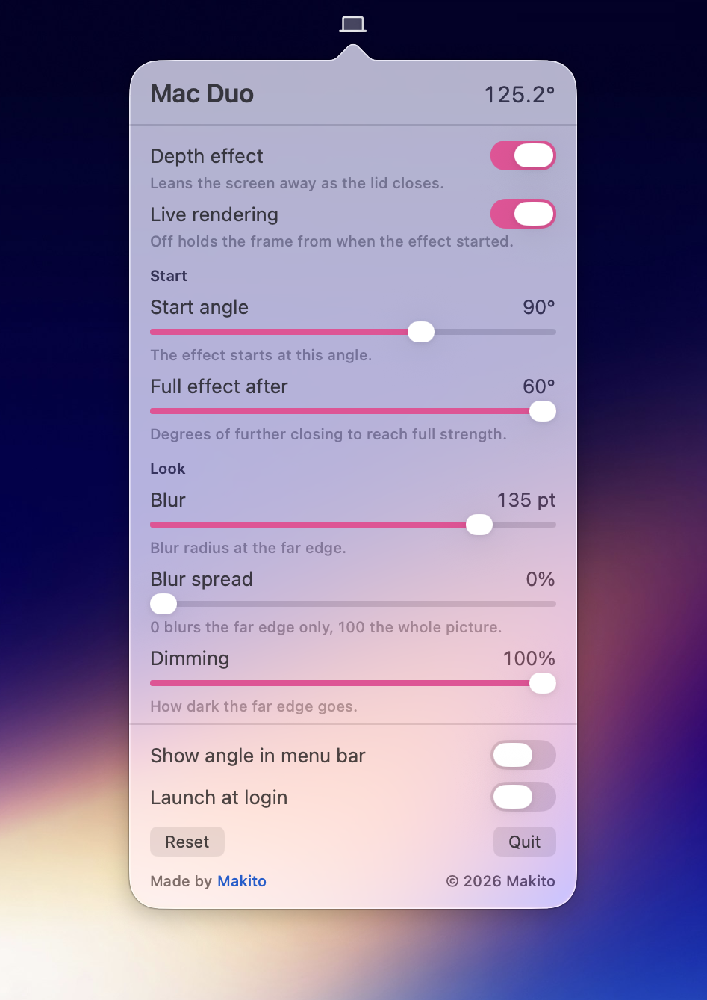

实时景深
使用 Metal 实时呈现透视、模糊和渐暗，合盖时画面自然向后倾斜。
MACBOOK 合盖体验
Mac Duo 读取屏幕开合角度，为画面加入实时透视、模糊与渐暗效果，并支持分别设置合上和打开音效。
需要 macOS 14 或更高版本，以及配备兼容开合角度传感器的 MacBook。

核心体验
使用 Metal 实时呈现透视、模糊和渐暗，合盖时画面自然向后倾斜。
合上与打开可使用不同音效；完全闭合时停止播放，重新打开超过 120° 时播放打开音效。
自由设置触发角度、模糊、变暗和透视；支持中英文界面及登录时启动。
三步安装
下载并打开 DMG。
将 Mac Duo 拖入“应用程序”。
首次启动后，在系统设置中允许屏幕录制。
免费、开源，支持 Apple Silicon 与 Intel Mac。